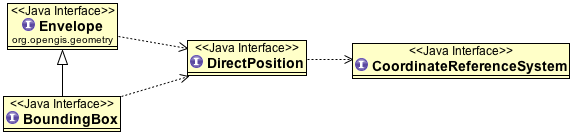
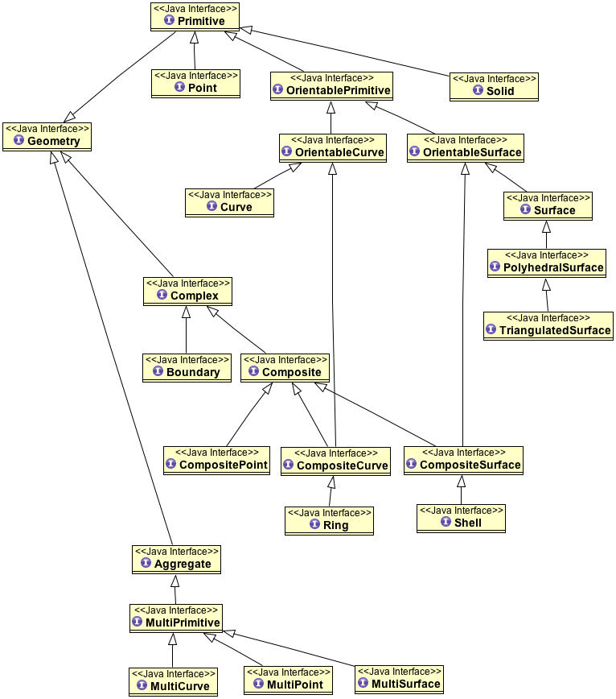
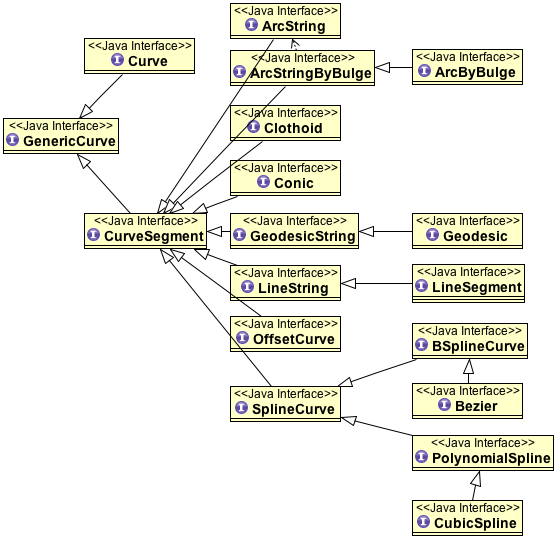

ISO Geometry¶
The OpenGIS module defines a set of interfaces aligned with the ISO 19107 Geometry Specification.
Before we get distracted in details here is the section of ISO 19107 we actually use. You will see these classes in a casual use of GeoTools.
That is it - just three of them:
- Envelope represents a an extent with an upper and lower bounds
- BoundingBox specifically represents a two dimensional extent
- DirectPosition is a location on the earth defined using a set of ordinates, and a CoordinateReferenceSystem so we can tell what the numbers mean
ISO 19107¶
While they follow roughly the same idea as JTS, the follow things through in three stages. There is a lot of noise in the above diagram as “helpful” interfaces have been defined to isolate common qualities.
- High Level “Geometry” classes
- Point
- Curve
- Surface
- Composed of smaller segments or patches
- Point is defined by a single DirectPosition
- Curve is defined as a series of CurveSegment
- Surface is defined as a series of SurfacePatch
- There is a wide range of options when defining a segment or patch
- LineString - a simple list of LineSegments (just like we are used to)
- SplineCurve - a range of common splines such as BSpline
- Conic - very useful for great circles in GIS
- ArcString - common with CAD drawings
Here is an example of the types defined around Geometry, see if you can spot Point, Curve and Surface mentioned above.
{kind=link}
Here is an example of the selection available when defining a curve.
{kind=link}
These interfaces are many, varied, and well documented. The problem is they are not useful.
They are complex (in comparison to the Simple Feature Specification used by JTS)
The two implementations are unsupported modules
- Geometry Plugin a port of JTS 1.7 to the ISO Geometry interfaces
- JTS Wrapper Plugin an implementation that delegates all the work to JTS
You should only include one on your CLASSPATH at any point in time.
Q: I want to work in 3D?
I am afraid we cannot be much help at this time, you are welcome to pick up one of the unsupported modules above. We welcome volunteers.
Q: I need to represent Curves?
Have a look at our JTS utility class, there are methods that help you define a JTS LineString based on a curve formula.
Q: Which implementation should I use?
Neither - unless you have a direct need for these implementations (because you are limiting your project to ISO19107 only interfaces) they are not recommended.
- The JTS-Wrapper implementation is field tested, but limited to constructs similar to JTS. On the bright side because it always uses the latest JTS the performance of this implementation has improved over time.
- The Geometry module has now had a lot of testing; but since it is a port of JTS 1.7 it will lag behind JTS in speed. It is however less complicated in terms of duplication of information.
Q: How do I use ISO Geometry
Check out the documentation for the unsupported Geometry Plugin. There is a nice series of source code examples.